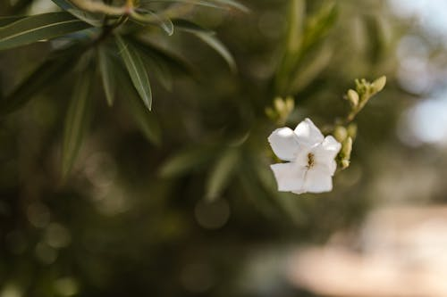

JASMIM

O que é?
O Jasmim é uma planta trepadeira ou arbustiva famosa por suas pequenas flores brancas ou amareladas de perfume inebriante. Originário das regiões tropicais e subtropicais da Ásia e África, ele é amplamente utilizado na perfumaria fina e em chás. Simboliza a delicadeza, a sensualidade e a luz espiritual.
Como cuidar?
O jasmim gosta de espaço para crescer e muita luz:
- Luz: Precisa de sol pleno ou meia-sombra. Para florescer intensamente, ele precisa de pelo menos 4 a 5 horas de luz direta.
- Solo: Prefere solos férteis, ricos em matéria orgânica e com boa drenagem. Não tolera solos muito compactos.
- Rega: Deve ser regular, mantendo o solo úmido (especialmente no verão), mas nunca encharcado.
- Suporte: Por ser muitas vezes uma trepadeira, ele precisa de treliças, muros ou cercas para se apoiar e crescer.
Curiosidades
- Perfume Noturno: Muitas espécies de jasmim abrem suas flores e liberam seu aroma mais forte após o pôr do sol.
- Chá de Jasmim: Na China, as flores são misturadas a folhas de chá verde para criar uma das bebidas mais populares e aromáticas do país.
- Rei das Flores: Na Índia, o jasmim é conhecido como "Rainha da Noite" devido ao seu perfume sedutor.
- Óleo Precioso: São necessárias toneladas de flores colhidas à mão para produzir apenas um litro de óleo essencial puro de jasmim.